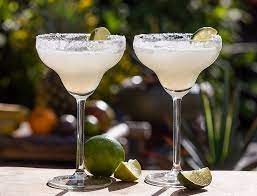

Margerita
Margarita Cocktail

Ingredients
- 1 tablespoon salt
- 1 ½ fluid ounces tequila
- 1 fluid ounce orange flavored liqueur (such as Cointreau®)
- ½ fluid ounce lime juice
- 1 cup ice
- 1 lime wheel
Directions
-
Sprinkle salt on a small plate. Lightly wet the rim of a cocktail glass
or margarita glass with a damp paper towel. Dip the moistened rim in
salt to coat. Set aside.
-
Combine tequila, orange-flavored brandy, and lime juice in a cocktail
shaker. Add ice and shake until chilled. Strain into a salt-rimmed
cocktail glass or a salt-rimmed, ice-filled margarita glass. Garnish
with a lime wheel.
Home Page